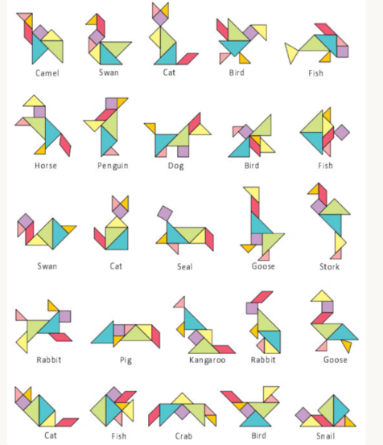
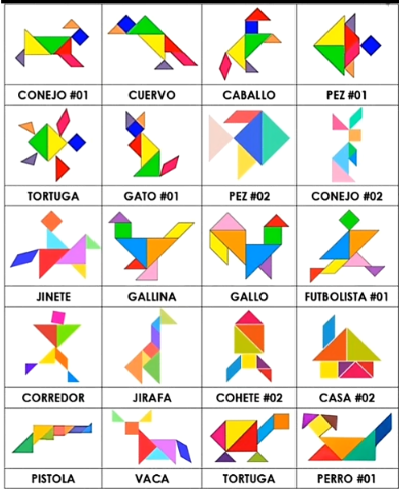
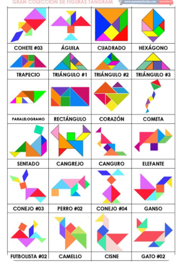

📖 Instrucciones de Uso
El Tangram es un rompecabezas milenario que consta de 7 piezas geométricas (llamadas tans): 5 triángulos de diferentes tamaños, 1 cuadrado y 1 paralelogramo.
Reglas Fundamentales:
- Usa todas las piezas: En cada figura armada debes emplear obligatoriamente las 7 piezas.
- Sin superposición: Las piezas no se pueden montar ni solapar unas sobre otras.
- Lados tocándose: Las piezas deben tocarse por sus aristas o vértices.
- Rotación y voltee: Puedes rotar las piezas y voltear el paralelogramo si es necesario para encajar la silueta.
🎯 Catálogo de Modelos
Toca cualquier imagen para ampliarla y ver los detalles de las figuras con mayor comodidad en tu dispositivo móvil.
Colección Principal (1)

🔍 Toca para ampliar
Colección Principal (2)

🔍 Toca para ampliar
Colección Gran Variedad (3)

🔍 Toca para ampliar